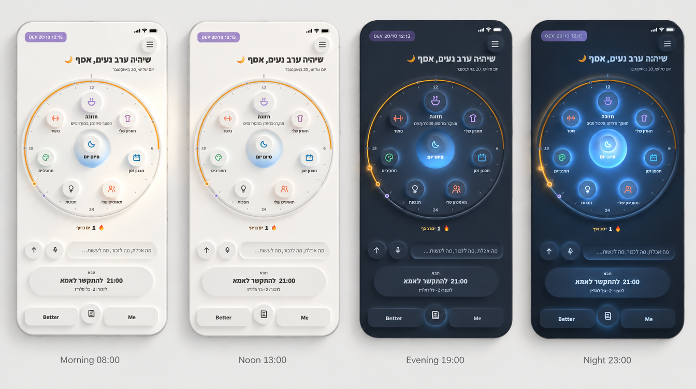
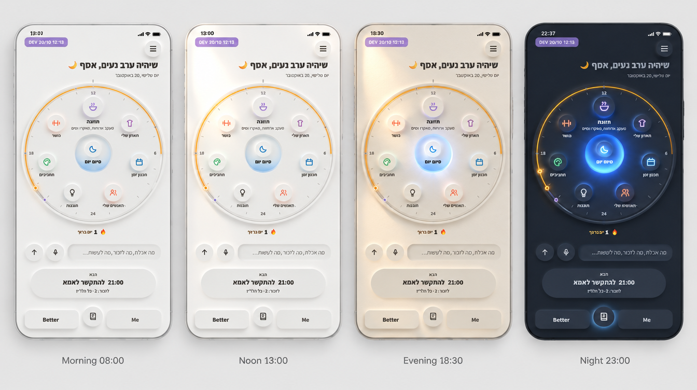
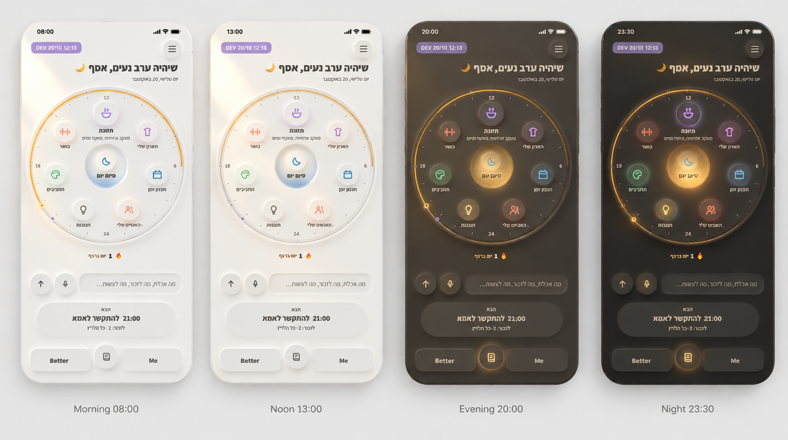

בוקר וצהריים של א׳, ערב של ג׳, והזוהר של א׳
בכל השלוש: בבוקר ובצהריים החומר נשאר לבן והאור זז כמו השמש, כמו באפשרות א׳. בערב החומר כהה כמו באפשרות ג׳, והבאר של "סיום יום" היא מקור האור שמאיר את החוגה מהמרכז החוצה, כמו הזוהר של א׳. ההבדל בין השלוש הוא איך מגיעים לחושך. אלה הדמיות, ולכן הטקסט העברי הקטן בהן לפעמים משובש. ב־dev לא שיניתי כלום.

יום לבן, ערב כחול־לילה
שני מצבים בלבד. עד הערב הכול לבן, ומהערב החומר כהה בגוון כחול־לילה, והבאר מאירה את כל החוגה. בלילה הזוהר חזק יותר מאשר בערב.
המעבר חד: בשעה מסוימת המסך מתחלף. מצד שני, זה הכי פשוט להבנה ולבנייה.

היום מחשיך בהדרגה, והבאר מתבהרת
ארבעה שלבים: לבן בבוקר, לבן בצהריים, חול חם בשעת הזהב, כשהבאר מתחילה לזהור, ובלילה חומר כהה, כשהבאר היא האור היחיד. ככל שהיום מחשיך, "סיום יום" מתבהר, כאילו הערב מזמין אותך אליו.
ארבעה מצבים לתחזק במקום שניים. זה גם הכי יפה, כי המסך מספר את היום.

לילה חם, כמו חדר עם מנורה אחת
הלילה כהה וחם, בגוון קקאו־גרפיט ולא כחול. הבאר היא המנורה, ובכל חלק בחוגה דולק אור קטן בצבע שלו, כמו פנסים שעונים למרכז. זה הכי נעים ורגוע מבין השלוש.
בהדמיה הבאר יצאה ענבר, וענבר שמור. בבנייה היא תישאר כחולה, או בצבע חם אחר שנבחר יחד. וגם האורות בכל חלק צריכים להישאר עדינים, כדי שלא ייראו כמו "השתמשת בזה היום".
כדי לבחור, כתוב לי 1, 2 או 3, או שילוב.